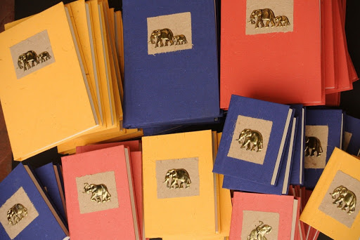

Manufacturers of Eco-Friendly Products in Sri Lanka
History
"In 1993 a brief encounter with a piece of ‘recycled paper’ led us on a journey that would give rise to what was at that time a whole new industry in the country. The paper originated in a factory in Pannala, one of only two in the country that was making recycled paper. A whole new team and added new products and processes to the production cycle – creating paper using waste from paddy, banana and pineapple cultivations as well as waste paper and elephant dung. Bringing this new product to the Colombo market, we knocked on the doors of leading businesses educating them about the product and the need to support recycling."
Today
"We source a range of embellishments and outsource a variety of handcrafted work to small suppliers with final assembly, customization and most importantly quality control being carried out at our factory and workshop in Colombo. In many ways, this evolution of our business model has enabled us to have a greater impact on the livelihoods of Sri Lankan artisans and the communities in which they operate."(Trickledown, 2017)
 Visit UsDescription
"Eco Products® is a privately owned Sri Lankan manufacture; (Member of the National Crafts Council), specialized in making environment friendly promotional items. Most products are hand-made according to customers’ requirements, with customer specified logos and captions. Our main products are various types of bags, i.e. Shopping Bags, Hand Bags, Tote Bags, Conference Bags, File Bags, Sling Bags, Pump Bags, Monk Bags & Pouches. We also make stationary items such as, Note-pads, Books, Dockets, Folders, Handmade Boxes, etc. Raw materials we used are Jute, Cotton, Hemp, Coir, Cane and paper. We have specialized in traditional Sri Lankan dyeing using plants extracts and herbs. All products are Eco friendly & biodegradable and manufactured under Highest Quality Standards!"
"One of the most popular product of ours is the recreated version of the Monk Bag. This can be produced in various colours and prints. Monk Bag is a popular Conference Bag and used by many UN agencies & government institutes. It’s believed to be that this bag was designed during the period of Lord Buddha, some 2500 years ago."(Eco Products, 2019)
Visit UsDescription
"Eco Films (Pvt) Ltd is a flexible packaging manufacturer based in Jaela, Sri Lanka, specialized in manufacturing of comprehensive portfolio of printed and unprinted flexing packaging materials supplying a wide range of customers across all key market sectors in domestic and export. State of the art manufacturing facility is located in Jaela, Sri Lanka 17 km south of Bandaranayke International Airport and 22km North of Colombo Harbor. Present installed Capacity is 180 tons per month and has a workforce of 50."
"Eco Film is a subsidiary of Polytrad Industries and Polytrad is a member of the Oxo-biodegradable plastic Association of United Kingdom (OPA). In Sri Lanka we are the sole distributor of Symphony Environmental products such as d2w, d2p and d2t from United Kingdom, Exclusive agents for Torise Bio- Materials, a world leading compostable Resin manufacturer in China and Agents for NHAT HUY Group for Calcium Carbonate Powder and Calcium Carbonate fillers."
"Our key success factors include ethical business practices, transparency and our constant endeavor to provide satisfactory customer service."(Eco Films, 2019)
Visit UsHistory
"Hayleys PLC, Sri Lanka, a multiple awarded winning blue-chip conglomerate which commenced its commercial operations in 1878 as Chas P. Hayley & Company currently encompasses 12 defined sectors of the enterprise. Being the first business subsidiary of Hayleys PLC, Hayleys fibre restructured to operate under Hayleys Eco solutions with the diversifications to meet varied requirements. As a world-renowned manufacturer and exporter of eco-friendly coir based fibre products, our legacy continues on and today we are exporting over 400 customized coir based fibre products around the world."
Today
"Eco solutions represent the coir fibre products sector of Hayleys which in turn is denoted by 3 sub-sectors. Hayleys Fibre is responsible for manufacturing coir based Horticulture, Growing Media, Erosion Control, Bedding products & Mattresses. Floor coverings manufacture, floor/doormats while brushes and broom are manufactured by the brush-ware sub-sector."(Hayleys Fiber, 2019)
Visit Us